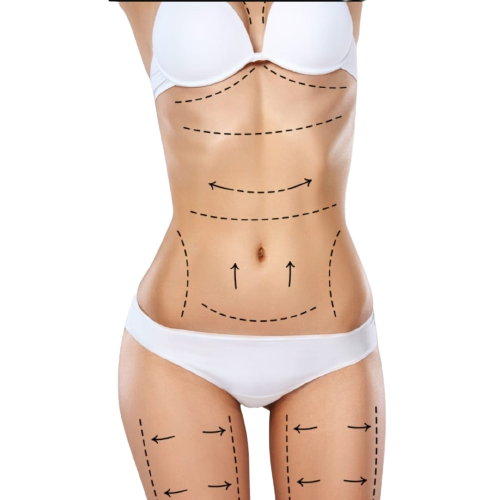

HARMONIZAÇÃO
- TOXINA BOTULÍNICA - é um tratamento estético popular para suavizar rugas e linhas de expressão no rosto. O procedimento envolve a injeção de uma substância segura e diluída em áreas específicas do rosto.
- É um procedimento rápido, geralmente sem a necessidade de anestesia, e não requer tempo de recuperação significativo.
- Os resultados costumam aparecer em alguns dias e podem durar de 3 a 4 meses, variando de pessoa.
- PREENCHIMENTO COM ÁCIDO HIALURÔNICO - O ácido hialurônico é uma substância frequentemente utilizada em procedimentos de preenchimento estético. Ele é uma escolha popular devido à sua compatibilidade com o corpo humano e à sua capacidade de proporcionar resultados naturais.
- O ácido hialurônico é usado para preencher rugas, linhas de expressão, vincos e áreas que perderam volume com o envelhecimento. Também é aplicado para realçar os lábios e contornar áreas do rosto, como as maçãs do rosto e o queixo.
- A duração dos resultados varia dependendo do tipo de ácido hialurônico usado e da área tratada, mas geralmente dura de 3 a 8 meses
- BIOESTIMULADORES DE COLÁGENO - O tratamento estético com bioestimuladores de colágeno é uma abordagem que visa estimular a produção natural de colágeno na pele.
- Aqui estão alguns dos efeitos e benefícios desse tipo de tratamento:
Estimulação do Colágeno: - Os bioestimuladores, como o ácido polilático (Sculptra/ Elleva) e o hidroxiapatita de cálcio (Radiesse), são injetados na pele para estimular as células a produzirem mais colágeno. O colágeno é uma proteína essencial para a firmeza, elasticidade e sustentação da pele.
Melhora da Firmeza e Elasticidade - Com o tempo, à medida que o colágeno é produzido, a pele tende a ficar mais firme, elástica e com uma aparência rejuvenescida. Isso pode ajudar a reduzir a flacidez e melhorar a textura da pele.
Redução de Rugas e Linhas de Expressão - O aumento na produção de colágeno pode preencher rugas e linhas finas, proporcionando um aspecto mais suave e jovem à pele.
Volume e Contorno Melhorados - Além de melhorar a qualidade da pele, os bioestimuladores também podem ser usados para restaurar o volume em áreas do rosto que perderam sua plenitude com o tempo.
Resultados Graduais - Os resultados dos bioestimuladores não são imediatos, pois dependem da produção natural de colágeno. Geralmente, os efeitos se tornam mais visíveis após algumas semanas e podem durar vários meses.
- A duração dos resultados pode variar de pessoa para pessoa e depende do tipo de bioestimulador usado. Em alguns casos, os efeitos podem durar até 2 anos ou mais.
- FIOS DE PDO - Os fios de PDO (polidioxanona) são um tipo de fio absorvível utilizado em procedimentos estéticos para tratar a flacidez da pele e promover o rejuvenescimento facial. Eles são feitos de um material biocompatível, a polidioxanona, que é absorvido pelo corpo ao longo do tempo. Os fios de PDO são inseridos sob a pele por meio de agulhas ou cânulas e, uma vez no lugar, eles proporcionam um efeito de lifting não cirúrgico.
- Eles são frequentemente usados para levantar áreas mais flácidas, como as bochechas, o pescoço e a testa.
- A duração dos resultados pode variar de pessoa para pessoa. Em alguns casos, os efeitos podem durar de 6 meses a 1 ano.
ESTÉTICA FACIAL
- LIMPEZA DE PELE
- A Limpeza da Pele é um dos procedimentos mais realizados nas clínicas de estética, tendo como objetivo fornecer uma limpeza mais profunda da pele, a remoção de espinhas e cravos e impurezas que uma limpeza normal não consegue eliminar.
E engana-se quem acha que a limpeza de pele é indicada apenas para peles oleosas, pelo contrário esse tratamento é indicado para todos os tipos de pele
- SKINBOOSTER
- A aplicação de Skinbooster é um dos procedimentos da estética facial mais buscados nos últimos tempos. Ele promove uma hidratação profunda no rosto, o que favorece seu rejuvenescimento acelerado.O material melhora o aspecto da pele e estimula a produção de colágeno, deixando-a mais firme e radiante.
- MICROAGULHAMENTO
– Elimina cicatrizes, estrias, com rejuvenescimento da pele;
- LIPO DE PAPADA ENZIMÁTICA
- A lipo de papada enzimática, também conhecida como "lipólise de papada enzimática," é um procedimento estético não cirúrgico que utiliza enzimas para reduzir a gordura acumulada na área da papada, a região abaixo do queixo.Durante o procedimento e injetado enzimas ( ativos), como a deoxicólico, diretamente na área da papada. Essas enzimas ajudam a quebrar as células de gordura, tornando-as mais fáceis de serem eliminadas pelo corpo ao longo do tempo. Como resultado, a papada pode diminuir de tamanho, proporcionando uma aparência mais esculpida no pescoço e na mandíbula. É importante ressaltar que a lipo de papada enzimática é menos invasiva do que a cirurgia plástica tradicional de remoção de gordura na papada, mas os resultados podem variar de pessoa para pessoa, e a quantidade de sessões também.
- PEELING QUÍMICO E ORGANICO
- O Peeling é um tratamento da estética facial onde são aplicados alguns ácidos sobre a pele, que ajudam a retirar as camadas danificadas por meio da descamação e a promover o crescimento de uma camada mais lisa, elástica, suave e fresca, por meio da renovação celular da pele facial. Esse procedimento é indicado para pacientes que desejam renovar a pele, combater a oleosidade e tirar manchas. Os produtos utilizados devem ser adequados ao tipo de pele, bem como a frequência do tratamento.

TRATAMENTO CORPORAL
- MESOTERAPIA
- Aplicaçâo - Na mesoterapia, uma série de injeções superficiais é administrada na camada média da pele, geralmente na área que está sendo tratada.
Substâncias - As injeções na mesoterapia podem conter uma variedade de substâncias ativas, como vitaminas, minerais, aminoácidos, antioxidantes e outros ingredientes, dependendo do objetivo do tratamento. Essas substâncias são escolhidas para tratar a condição específica.
Finalidade - A mesoterapia é frequentemente usada para tratar problemas estéticos como celulite, gordura localizada, flacidez da pele, rugas finas e queda de cabelo. As substâncias injetadas podem ajudar a melhorar a circulação sanguínea, estimular a produção de colágeno e fornecer nutrientes essenciais para a pele
- INTRADERMOTERAPIA
- Aplicaçâo - A intradermoterapia também envolve injeções, mas as agulhas são inseridas diretamente na camada mais profunda da pele, conhecida como a derme. Isso permite uma administração mais precisa das substâncias.
Substâncias - As injeções de intradermoterapia geralmente contêm substâncias específicas, como ácido hialurônico, enzimas ou outros medicamentos, dependendo do tratamento pretendido.
Finalidade - A intradermoterapia é frequentemente usada para tratar a flacidez da pele, melhorar a hidratação da pele e reduzir rugas profundas. Também pode ser utilizada para fins de rejuvenescimento facial.
TRATAMENTOS CAPILAR
- Avaliação tricológica – análise detalhada do couro cabeludo e da haste capilar;
- LEDterapia – Trata queda dos fios de cabelos e melhora a qualidade dos fios;
- MMP no couro capilar – aplicação medicamentos diretamente no local onde ocorre a queda capilar, de modo a aumentar a circulação sanguínea no local